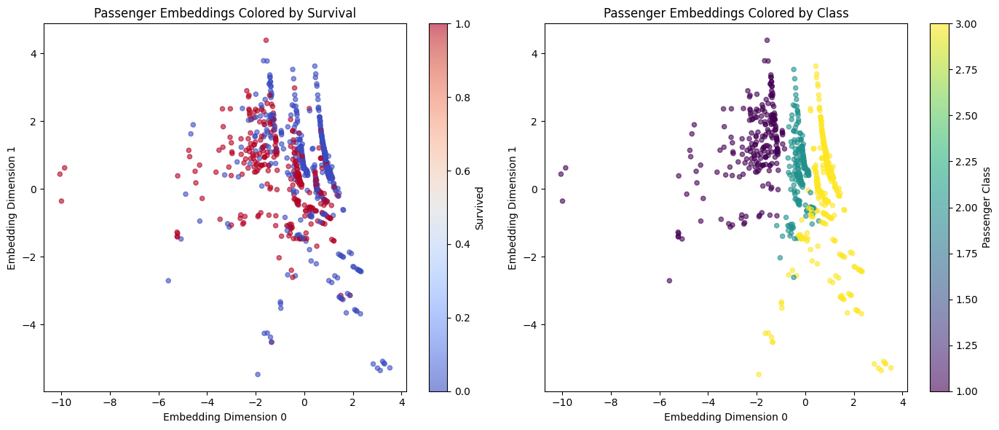

<!DOCTYPE html>


<html lang="en" data-content_root="./" >

  <head>
    <meta charset="utf-8" />
    <meta name="viewport" content="width=device-width, initial-scale=1.0" /><meta name="viewport" content="width=device-width, initial-scale=1" />

    <title>Titanic Dataset Example &#8212; Row2Vec Documentation</title>
  
  
  
  <script data-cfasync="false">
    document.documentElement.dataset.mode = localStorage.getItem("mode") || "";
    document.documentElement.dataset.theme = localStorage.getItem("theme") || "";
  </script>
  
  <!-- Loaded before other Sphinx assets -->
  <link href="_static/styles/theme.css?digest=dfe6caa3a7d634c4db9b" rel="stylesheet" />
<link href="_static/styles/bootstrap.css?digest=dfe6caa3a7d634c4db9b" rel="stylesheet" />
<link href="_static/styles/pydata-sphinx-theme.css?digest=dfe6caa3a7d634c4db9b" rel="stylesheet" />

  
  <link href="_static/vendor/fontawesome/6.5.2/css/all.min.css?digest=dfe6caa3a7d634c4db9b" rel="stylesheet" />
  <link rel="preload" as="font" type="font/woff2" crossorigin href="_static/vendor/fontawesome/6.5.2/webfonts/fa-solid-900.woff2" />
<link rel="preload" as="font" type="font/woff2" crossorigin href="_static/vendor/fontawesome/6.5.2/webfonts/fa-brands-400.woff2" />
<link rel="preload" as="font" type="font/woff2" crossorigin href="_static/vendor/fontawesome/6.5.2/webfonts/fa-regular-400.woff2" />

    <link rel="stylesheet" type="text/css" href="_static/pygments.css?v=03e43079" />
    <link rel="stylesheet" type="text/css" href="_static/styles/sphinx-book-theme.css?v=eba8b062" />
    <link rel="stylesheet" type="text/css" href="_static/togglebutton.css?v=13237357" />
    <link rel="stylesheet" type="text/css" href="_static/copybutton.css?v=76b2166b" />
    <link rel="stylesheet" type="text/css" href="_static/mystnb.8ecb98da25f57f5357bf6f572d296f466b2cfe2517ffebfabe82451661e28f02.css" />
    <link rel="stylesheet" type="text/css" href="_static/sphinx-thebe.css?v=4fa983c6" />
    <link rel="stylesheet" type="text/css" href="_static/sphinx-design.min.css?v=95c83b7e" />
  
  <!-- Pre-loaded scripts that we'll load fully later -->
  <link rel="preload" as="script" href="_static/scripts/bootstrap.js?digest=dfe6caa3a7d634c4db9b" />
<link rel="preload" as="script" href="_static/scripts/pydata-sphinx-theme.js?digest=dfe6caa3a7d634c4db9b" />
  <script src="_static/vendor/fontawesome/6.5.2/js/all.min.js?digest=dfe6caa3a7d634c4db9b"></script>

    <script src="_static/documentation_options.js?v=9eb32ce0"></script>
    <script src="_static/doctools.js?v=9a2dae69"></script>
    <script src="_static/sphinx_highlight.js?v=dc90522c"></script>
    <script src="_static/clipboard.min.js?v=a7894cd8"></script>
    <script src="_static/copybutton.js?v=f281be69"></script>
    <script src="_static/scripts/sphinx-book-theme.js?v=887ef09a"></script>
    <script>let toggleHintShow = 'Click to show';</script>
    <script>let toggleHintHide = 'Click to hide';</script>
    <script>let toggleOpenOnPrint = 'true';</script>
    <script src="_static/togglebutton.js?v=4a39c7ea"></script>
    <script>var togglebuttonSelector = '.toggle, .admonition.dropdown';</script>
    <script src="_static/design-tabs.js?v=f930bc37"></script>
    <script>const THEBE_JS_URL = "https://unpkg.com/thebe@0.8.2/lib/index.js"; const thebe_selector = ".thebe,.cell"; const thebe_selector_input = "pre"; const thebe_selector_output = ".output, .cell_output"</script>
    <script async="async" src="_static/sphinx-thebe.js?v=c100c467"></script>
    <script>var togglebuttonSelector = '.toggle, .admonition.dropdown';</script>
    <script>const THEBE_JS_URL = "https://unpkg.com/thebe@0.8.2/lib/index.js"; const thebe_selector = ".thebe,.cell"; const thebe_selector_input = "pre"; const thebe_selector_output = ".output, .cell_output"</script>
    <script>DOCUMENTATION_OPTIONS.pagename = 'titanic_example';</script>
    <link rel="canonical" href="/row2vec/titanic_example.html" />
    <link rel="index" title="Index" href="genindex.html" />
    <link rel="search" title="Search" href="search.html" />
    <link rel="next" title="Adult Dataset Example" href="adult_example.html" />
    <link rel="prev" title="Quickstart Guide" href="quickstart.html" />
  <meta name="viewport" content="width=device-width, initial-scale=1"/>
  <meta name="docsearch:language" content="en"/>
  </head>
  
  
  <body data-bs-spy="scroll" data-bs-target=".bd-toc-nav" data-offset="180" data-bs-root-margin="0px 0px -60%" data-default-mode="">

  
  
  <div id="pst-skip-link" class="skip-link d-print-none"><a href="#main-content">Skip to main content</a></div>
  
  <div id="pst-scroll-pixel-helper"></div>
  
  <button type="button" class="btn rounded-pill" id="pst-back-to-top">
    <i class="fa-solid fa-arrow-up"></i>Back to top</button>

  
  <input type="checkbox"
          class="sidebar-toggle"
          id="pst-primary-sidebar-checkbox"/>
  <label class="overlay overlay-primary" for="pst-primary-sidebar-checkbox"></label>
  
  <input type="checkbox"
          class="sidebar-toggle"
          id="pst-secondary-sidebar-checkbox"/>
  <label class="overlay overlay-secondary" for="pst-secondary-sidebar-checkbox"></label>
  
  <div class="search-button__wrapper">
    <div class="search-button__overlay"></div>
    <div class="search-button__search-container">
<form class="bd-search d-flex align-items-center"
      action="search.html"
      method="get">
  <i class="fa-solid fa-magnifying-glass"></i>
  <input type="search"
         class="form-control"
         name="q"
         id="search-input"
         placeholder="Search..."
         aria-label="Search..."
         autocomplete="off"
         autocorrect="off"
         autocapitalize="off"
         spellcheck="false"/>
  <span class="search-button__kbd-shortcut"><kbd class="kbd-shortcut__modifier">Ctrl</kbd>+<kbd>K</kbd></span>
</form></div>
  </div>

  <div class="pst-async-banner-revealer d-none">
  <aside id="bd-header-version-warning" class="d-none d-print-none" aria-label="Version warning"></aside>
</div>

  
    <header class="bd-header navbar navbar-expand-lg bd-navbar d-print-none">
    </header>
  

  <div class="bd-container">
    <div class="bd-container__inner bd-page-width">
      
      
      
      <div class="bd-sidebar-primary bd-sidebar">
        

  
  <div class="sidebar-header-items sidebar-primary__section">
    
    
    
    
  </div>
  
    <div class="sidebar-primary-items__start sidebar-primary__section">
        <div class="sidebar-primary-item">

  
    
  

<a class="navbar-brand logo" href="intro.html">
  
  
  
  
  
  
    <p class="title logo__title">Row2Vec Documentation</p>
  
</a></div>
        <div class="sidebar-primary-item">

 <script>
 document.write(`
   <button class="btn search-button-field search-button__button" title="Search" aria-label="Search" data-bs-placement="bottom" data-bs-toggle="tooltip">
    <i class="fa-solid fa-magnifying-glass"></i>
    <span class="search-button__default-text">Search</span>
    <span class="search-button__kbd-shortcut"><kbd class="kbd-shortcut__modifier">Ctrl</kbd>+<kbd class="kbd-shortcut__modifier">K</kbd></span>
   </button>
 `);
 </script></div>
        <div class="sidebar-primary-item"><nav class="bd-links bd-docs-nav" aria-label="Main">
    <div class="bd-toc-item navbar-nav active">
        <ul class="current nav bd-sidenav">
<li class="toctree-l1"><a class="reference internal" href="installation.html">Installation</a></li>
<li class="toctree-l1"><a class="reference internal" href="quickstart.html">Quickstart Guide</a></li>
<li class="toctree-l1 current active"><a class="current reference internal" href="#">Titanic Dataset Example</a></li>
<li class="toctree-l1"><a class="reference internal" href="adult_example.html">Adult Dataset Example</a></li>
<li class="toctree-l1"><a class="reference internal" href="housing_example.html">Boston Housing Dataset Example</a></li>
<li class="toctree-l1"><a class="reference internal" href="advanced_features.html">Advanced Features</a></li>
<li class="toctree-l1"><a class="reference internal" href="cli_guide.html">Command-Line Interface Guide</a></li>
<li class="toctree-l1"><a class="reference internal" href="theoretical_foundation.html">Theoretical Foundation</a></li>
<li class="toctree-l1"><a class="reference internal" href="api_reference.html">API Reference</a></li>
<li class="toctree-l1"><a class="reference internal" href="changelog.html">Changelog</a></li>
</ul>

    </div>
</nav></div>
    </div>
  
  
  <div class="sidebar-primary-items__end sidebar-primary__section">
  </div>
  
  <div id="rtd-footer-container"></div>


      </div>
      
      <main id="main-content" class="bd-main" role="main">
        
        

<div class="sbt-scroll-pixel-helper"></div>

          <div class="bd-content">
            <div class="bd-article-container">
              
              <div class="bd-header-article d-print-none">
<div class="header-article-items header-article__inner">
  
    <div class="header-article-items__start">
      
        <div class="header-article-item"><button class="sidebar-toggle primary-toggle btn btn-sm" title="Toggle primary sidebar" data-bs-placement="bottom" data-bs-toggle="tooltip">
  <span class="fa-solid fa-bars"></span>
</button></div>
      
    </div>
  
  
    <div class="header-article-items__end">
      
        <div class="header-article-item">

<div class="article-header-buttons">


<div class="dropdown dropdown-download-buttons">
  <button class="btn dropdown-toggle" type="button" data-bs-toggle="dropdown" aria-expanded="false" aria-label="Download this page">
    <i class="fas fa-download"></i>
  </button>
  <ul class="dropdown-menu">
      
      
      
      <li><a href="_sources/titanic_example.md" target="_blank"
   class="btn btn-sm btn-download-source-button dropdown-item"
   title="Download source file"
   data-bs-placement="left" data-bs-toggle="tooltip"
>
  

<span class="btn__icon-container">
  <i class="fas fa-file"></i>
  </span>
<span class="btn__text-container">.md</span>
</a>
</li>
      
      
      
      
      <li>
<button onclick="window.print()"
  class="btn btn-sm btn-download-pdf-button dropdown-item"
  title="Print to PDF"
  data-bs-placement="left" data-bs-toggle="tooltip"
>
  

<span class="btn__icon-container">
  <i class="fas fa-file-pdf"></i>
  </span>
<span class="btn__text-container">.pdf</span>
</button>
</li>
      
  </ul>
</div>


<button onclick="toggleFullScreen()"
  class="btn btn-sm btn-fullscreen-button"
  title="Fullscreen mode"
  data-bs-placement="bottom" data-bs-toggle="tooltip"
>
  

<span class="btn__icon-container">
  <i class="fas fa-expand"></i>
  </span>

</button>


<script>
document.write(`
  <button class="btn btn-sm nav-link pst-navbar-icon theme-switch-button" title="light/dark" aria-label="light/dark" data-bs-placement="bottom" data-bs-toggle="tooltip">
    <i class="theme-switch fa-solid fa-sun fa-lg" data-mode="light"></i>
    <i class="theme-switch fa-solid fa-moon fa-lg" data-mode="dark"></i>
    <i class="theme-switch fa-solid fa-circle-half-stroke fa-lg" data-mode="auto"></i>
  </button>
`);
</script>


<script>
document.write(`
  <button class="btn btn-sm pst-navbar-icon search-button search-button__button" title="Search" aria-label="Search" data-bs-placement="bottom" data-bs-toggle="tooltip">
    <i class="fa-solid fa-magnifying-glass fa-lg"></i>
  </button>
`);
</script>
<button class="sidebar-toggle secondary-toggle btn btn-sm" title="Toggle secondary sidebar" data-bs-placement="bottom" data-bs-toggle="tooltip">
    <span class="fa-solid fa-list"></span>
</button>
</div></div>
      
    </div>
  
</div>
</div>
              
              

<div id="jb-print-docs-body" class="onlyprint">
    <h1>Titanic Dataset Example</h1>
    <!-- Table of contents -->
    <div id="print-main-content">
        <div id="jb-print-toc">
            
            <div>
                <h2> Contents </h2>
            </div>
            <nav aria-label="Page">
                <ul class="visible nav section-nav flex-column">
<li class="toc-h2 nav-item toc-entry"><a class="reference internal nav-link" href="#load-the-data">Load the Data</a></li>
<li class="toc-h2 nav-item toc-entry"><a class="reference internal nav-link" href="#data-preview">Data Preview</a></li>
<li class="toc-h2 nav-item toc-entry"><a class="reference internal nav-link" href="#data-preparation">Data Preparation</a></li>
<li class="toc-h2 nav-item toc-entry"><a class="reference internal nav-link" href="#unsupervised-row-embeddings">Unsupervised Row Embeddings</a></li>
<li class="toc-h2 nav-item toc-entry"><a class="reference internal nav-link" href="#visualize-the-embeddings">Visualize the Embeddings</a></li>
<li class="toc-h2 nav-item toc-entry"><a class="reference internal nav-link" href="#higher-dimensional-embeddings">Higher-Dimensional Embeddings</a></li>
<li class="toc-h2 nav-item toc-entry"><a class="reference internal nav-link" href="#target-based-embeddings">Target-Based Embeddings</a><ul class="visible nav section-nav flex-column">
<li class="toc-h3 nav-item toc-entry"><a class="reference internal nav-link" href="#sex-embeddings">Sex Embeddings</a></li>
<li class="toc-h3 nav-item toc-entry"><a class="reference internal nav-link" href="#passenger-class-embeddings">Passenger Class Embeddings</a></li>
</ul>
</li>
<li class="toc-h2 nav-item toc-entry"><a class="reference internal nav-link" href="#compare-with-classical-methods">Compare with Classical Methods</a></li>
<li class="toc-h2 nav-item toc-entry"><a class="reference internal nav-link" href="#visualize-method-comparison">Visualize Method Comparison</a></li>
<li class="toc-h2 nav-item toc-entry"><a class="reference internal nav-link" href="#use-embeddings-as-features">Use Embeddings as Features</a></li>
<li class="toc-h2 nav-item toc-entry"><a class="reference internal nav-link" href="#save-model-for-production">Save Model for Production</a></li>
<li class="toc-h2 nav-item toc-entry"><a class="reference internal nav-link" href="#key-takeaways">Key Takeaways</a></li>
<li class="toc-h2 nav-item toc-entry"><a class="reference internal nav-link" href="#next-steps">Next Steps</a></li>
</ul>
            </nav>
        </div>
    </div>
</div>

              
                
<div id="searchbox"></div>
                <article class="bd-article">
                  
  <section class="tex2jax_ignore mathjax_ignore" id="titanic-dataset-example">
<h1>Titanic Dataset Example<a class="headerlink" href="#titanic-dataset-example" title="Link to this heading">#</a></h1>
<p>A complete walkthrough using the famous Titanic dataset to demonstrate Row2Vec’s capabilities.</p>
<section id="load-the-data">
<h2>Load the Data<a class="headerlink" href="#load-the-data" title="Link to this heading">#</a></h2>
<div class="cell tag_remove-stderr tag_remove-warnings docutils container">
<div class="cell_input docutils container">
<div class="highlight-ipython3 notranslate"><div class="highlight"><pre><span></span><span class="c1"># Import complete suppression first</span>
<span class="n">exec</span><span class="p">(</span><span class="nb">open</span><span class="p">(</span><span class="s1">&#39;suppress_minimal.py&#39;</span><span class="p">)</span><span class="o">.</span><span class="n">read</span><span class="p">())</span>

<span class="kn">import</span><span class="w"> </span><span class="nn">pandas</span><span class="w"> </span><span class="k">as</span><span class="w"> </span><span class="nn">pd</span>
<span class="kn">import</span><span class="w"> </span><span class="nn">numpy</span><span class="w"> </span><span class="k">as</span><span class="w"> </span><span class="nn">np</span>
<span class="kn">from</span><span class="w"> </span><span class="nn">row2vec</span><span class="w"> </span><span class="kn">import</span> <span class="n">learn_embedding</span>
<span class="kn">import</span><span class="w"> </span><span class="nn">os</span>

<span class="c1"># Load Titanic dataset</span>
<span class="n">data_path</span> <span class="o">=</span> <span class="n">os</span><span class="o">.</span><span class="n">path</span><span class="o">.</span><span class="n">join</span><span class="p">(</span><span class="s1">&#39;..&#39;</span><span class="p">,</span> <span class="s1">&#39;data&#39;</span><span class="p">,</span> <span class="s1">&#39;titanic.csv&#39;</span><span class="p">)</span>
<span class="n">df</span> <span class="o">=</span> <span class="n">pd</span><span class="o">.</span><span class="n">read_csv</span><span class="p">(</span><span class="n">data_path</span><span class="p">)</span>

<span class="nb">print</span><span class="p">(</span><span class="sa">f</span><span class="s2">&quot;Dataset shape: </span><span class="si">{</span><span class="n">df</span><span class="o">.</span><span class="n">shape</span><span class="si">}</span><span class="s2">&quot;</span><span class="p">)</span>
<span class="nb">print</span><span class="p">(</span><span class="sa">f</span><span class="s2">&quot;</span><span class="se">\n</span><span class="s2">Columns: </span><span class="si">{</span><span class="n">df</span><span class="o">.</span><span class="n">columns</span><span class="o">.</span><span class="n">tolist</span><span class="p">()</span><span class="si">}</span><span class="s2">&quot;</span><span class="p">)</span>
<span class="nb">print</span><span class="p">(</span><span class="sa">f</span><span class="s2">&quot;</span><span class="se">\n</span><span class="s2">Missing values per column:&quot;</span><span class="p">)</span>
<span class="nb">print</span><span class="p">(</span><span class="n">df</span><span class="o">.</span><span class="n">isnull</span><span class="p">()</span><span class="o">.</span><span class="n">sum</span><span class="p">())</span>
</pre></div>
</div>
</div>
<div class="cell_output docutils container">
<div class="output stream highlight-myst-ansi notranslate"><div class="highlight"><pre><span></span>✓ Enhanced minimal suppression active
</pre></div>
</div>
<div class="output stream highlight-myst-ansi notranslate"><div class="highlight"><pre><span></span>Dataset shape: (887, 8)

Columns: [&#39;Survived&#39;, &#39;Pclass&#39;, &#39;Name&#39;, &#39;Sex&#39;, &#39;Age&#39;, &#39;Siblings/Spouses Aboard&#39;, &#39;Parents/Children Aboard&#39;, &#39;Fare&#39;]

Missing values per column:
Survived                   0
Pclass                     0
Name                       0
Sex                        0
Age                        0
Siblings/Spouses Aboard    0
Parents/Children Aboard    0
Fare                       0
dtype: int64
</pre></div>
</div>
</div>
</div>
</section>
<section id="data-preview">
<h2>Data Preview<a class="headerlink" href="#data-preview" title="Link to this heading">#</a></h2>
<div class="cell tag_remove-stderr tag_remove-warnings docutils container">
<div class="cell_input docutils container">
<div class="highlight-ipython3 notranslate"><div class="highlight"><pre><span></span><span class="nb">print</span><span class="p">(</span><span class="s2">&quot;First 5 passengers:&quot;</span><span class="p">)</span>
<span class="nb">print</span><span class="p">(</span><span class="n">df</span><span class="o">.</span><span class="n">head</span><span class="p">())</span>
</pre></div>
</div>
</div>
<div class="cell_output docutils container">
<div class="output stream highlight-myst-ansi notranslate"><div class="highlight"><pre><span></span>First 5 passengers:
   Survived  Pclass                                               Name  \
0         0       3                             Mr. Owen Harris Braund   
1         1       1  Mrs. John Bradley (Florence Briggs Thayer) Cum...   
2         1       3                              Miss. Laina Heikkinen   
3         1       1        Mrs. Jacques Heath (Lily May Peel) Futrelle   
4         0       3                            Mr. William Henry Allen   

      Sex   Age  Siblings/Spouses Aboard  Parents/Children Aboard     Fare  
0    male  22.0                        1                        0   7.2500  
1  female  38.0                        1                        0  71.2833  
2  female  26.0                        0                        0   7.9250  
3  female  35.0                        1                        0  53.1000  
4    male  35.0                        0                        0   8.0500  
</pre></div>
</div>
</div>
</div>
<div class="cell tag_remove-stderr tag_remove-warnings docutils container">
<div class="cell_input docutils container">
<div class="highlight-ipython3 notranslate"><div class="highlight"><pre><span></span><span class="c1"># Basic statistics</span>
<span class="nb">print</span><span class="p">(</span><span class="s2">&quot;Survival rate:&quot;</span><span class="p">,</span> <span class="n">df</span><span class="p">[</span><span class="s1">&#39;Survived&#39;</span><span class="p">]</span><span class="o">.</span><span class="n">mean</span><span class="p">())</span>
<span class="nb">print</span><span class="p">(</span><span class="s2">&quot;Average age:&quot;</span><span class="p">,</span> <span class="n">df</span><span class="p">[</span><span class="s1">&#39;Age&#39;</span><span class="p">]</span><span class="o">.</span><span class="n">mean</span><span class="p">())</span>
<span class="nb">print</span><span class="p">(</span><span class="s2">&quot;Average fare:&quot;</span><span class="p">,</span> <span class="n">df</span><span class="p">[</span><span class="s1">&#39;Fare&#39;</span><span class="p">]</span><span class="o">.</span><span class="n">mean</span><span class="p">())</span>
<span class="nb">print</span><span class="p">(</span><span class="s2">&quot;</span><span class="se">\n</span><span class="s2">Passenger classes:&quot;</span><span class="p">)</span>
<span class="nb">print</span><span class="p">(</span><span class="n">df</span><span class="p">[</span><span class="s1">&#39;Pclass&#39;</span><span class="p">]</span><span class="o">.</span><span class="n">value_counts</span><span class="p">()</span><span class="o">.</span><span class="n">sort_index</span><span class="p">())</span>
</pre></div>
</div>
</div>
<div class="cell_output docutils container">
<div class="output stream highlight-myst-ansi notranslate"><div class="highlight"><pre><span></span>Survival rate: 0.3855693348365276
Average age: 29.471443066516347
Average fare: 32.30542018038331

Passenger classes:
Pclass
1    216
2    184
3    487
Name: count, dtype: int64
</pre></div>
</div>
</div>
</div>
</section>
<section id="data-preparation">
<h2>Data Preparation<a class="headerlink" href="#data-preparation" title="Link to this heading">#</a></h2>
<div class="cell tag_remove-stderr tag_remove-warnings docutils container">
<div class="cell_input docutils container">
<div class="highlight-ipython3 notranslate"><div class="highlight"><pre><span></span><span class="c1"># For unsupervised learning, we&#39;ll drop the target and ID columns</span>
<span class="n">df_features</span> <span class="o">=</span> <span class="n">df</span><span class="o">.</span><span class="n">drop</span><span class="p">(</span><span class="n">columns</span><span class="o">=</span><span class="p">[</span><span class="s1">&#39;Survived&#39;</span><span class="p">,</span> <span class="s1">&#39;Name&#39;</span><span class="p">])</span>

<span class="nb">print</span><span class="p">(</span><span class="sa">f</span><span class="s2">&quot;Feature columns: </span><span class="si">{</span><span class="n">df_features</span><span class="o">.</span><span class="n">columns</span><span class="o">.</span><span class="n">tolist</span><span class="p">()</span><span class="si">}</span><span class="s2">&quot;</span><span class="p">)</span>
<span class="nb">print</span><span class="p">(</span><span class="sa">f</span><span class="s2">&quot;Shape for embedding: </span><span class="si">{</span><span class="n">df_features</span><span class="o">.</span><span class="n">shape</span><span class="si">}</span><span class="s2">&quot;</span><span class="p">)</span>

<span class="c1"># Row2Vec handles missing values automatically, but let&#39;s see what we&#39;re dealing with</span>
<span class="n">missing_counts</span> <span class="o">=</span> <span class="n">df_features</span><span class="o">.</span><span class="n">isnull</span><span class="p">()</span><span class="o">.</span><span class="n">sum</span><span class="p">()</span>
<span class="nb">print</span><span class="p">(</span><span class="sa">f</span><span class="s2">&quot;</span><span class="se">\n</span><span class="s2">Columns with missing values:&quot;</span><span class="p">)</span>
<span class="k">for</span> <span class="n">col</span><span class="p">,</span> <span class="n">count</span> <span class="ow">in</span> <span class="n">missing_counts</span><span class="p">[</span><span class="n">missing_counts</span> <span class="o">&gt;</span> <span class="mi">0</span><span class="p">]</span><span class="o">.</span><span class="n">items</span><span class="p">():</span>
    <span class="nb">print</span><span class="p">(</span><span class="sa">f</span><span class="s2">&quot;  </span><span class="si">{</span><span class="n">col</span><span class="si">}</span><span class="s2">: </span><span class="si">{</span><span class="n">count</span><span class="si">}</span><span class="s2"> missing (</span><span class="si">{</span><span class="n">count</span><span class="o">/</span><span class="nb">len</span><span class="p">(</span><span class="n">df_features</span><span class="p">)</span><span class="o">*</span><span class="mi">100</span><span class="si">:</span><span class="s2">.1f</span><span class="si">}</span><span class="s2">%)&quot;</span><span class="p">)</span>
</pre></div>
</div>
</div>
<div class="cell_output docutils container">
<div class="output stream highlight-myst-ansi notranslate"><div class="highlight"><pre><span></span>Feature columns: [&#39;Pclass&#39;, &#39;Sex&#39;, &#39;Age&#39;, &#39;Siblings/Spouses Aboard&#39;, &#39;Parents/Children Aboard&#39;, &#39;Fare&#39;]
Shape for embedding: (887, 6)

Columns with missing values:
</pre></div>
</div>
</div>
</div>
</section>
<section id="unsupervised-row-embeddings">
<h2>Unsupervised Row Embeddings<a class="headerlink" href="#unsupervised-row-embeddings" title="Link to this heading">#</a></h2>
<p>Create a 2D embedding for each passenger:</p>
<div class="cell tag_remove-stderr tag_remove-warnings docutils container">
<div class="cell_input docutils container">
<div class="highlight-ipython3 notranslate"><div class="highlight"><pre><span></span><span class="c1"># Generate 2D embeddings for visualization</span>
<span class="n">embeddings_2d</span> <span class="o">=</span> <span class="n">learn_embedding</span><span class="p">(</span>
    <span class="n">df_features</span><span class="p">,</span>
    <span class="n">mode</span><span class="o">=</span><span class="s2">&quot;unsupervised&quot;</span><span class="p">,</span>
    <span class="n">embedding_dim</span><span class="o">=</span><span class="mi">2</span><span class="p">,</span>
    <span class="n">max_epochs</span><span class="o">=</span><span class="mi">50</span><span class="p">,</span>
    <span class="n">batch_size</span><span class="o">=</span><span class="mi">32</span><span class="p">,</span>
    <span class="n">dropout_rate</span><span class="o">=</span><span class="mf">0.2</span><span class="p">,</span>
    <span class="n">hidden_units</span><span class="o">=</span><span class="mi">128</span><span class="p">,</span>
    <span class="n">verbose</span><span class="o">=</span><span class="kc">False</span><span class="p">,</span>
    <span class="n">seed</span><span class="o">=</span><span class="mi">42</span>
<span class="p">)</span>

<span class="nb">print</span><span class="p">(</span><span class="sa">f</span><span class="s2">&quot;Embeddings shape: </span><span class="si">{</span><span class="n">embeddings_2d</span><span class="o">.</span><span class="n">shape</span><span class="si">}</span><span class="s2">&quot;</span><span class="p">)</span>
<span class="nb">print</span><span class="p">(</span><span class="s2">&quot;</span><span class="se">\n</span><span class="s2">First 5 passenger embeddings:&quot;</span><span class="p">)</span>
<span class="nb">print</span><span class="p">(</span><span class="n">embeddings_2d</span><span class="o">.</span><span class="n">head</span><span class="p">())</span>
</pre></div>
</div>
</div>
<div class="cell_output docutils container">
<div class="output text_html"><pre style="white-space:pre;overflow-x:auto;line-height:normal;font-family:Menlo,'DejaVu Sans Mono',consolas,'Courier New',monospace"><span style="font-weight: bold">Model: "functional"</span>
</pre>
</div><div class="output text_html"><pre style="white-space:pre;overflow-x:auto;line-height:normal;font-family:Menlo,'DejaVu Sans Mono',consolas,'Courier New',monospace">┏━━━━━━━━━━━━━━━━━━━━━━━━━━━━━━━━━┳━━━━━━━━━━━━━━━━━━━━━━━━┳━━━━━━━━━━━━━━━┓
┃<span style="font-weight: bold"> Layer (type)                    </span>┃<span style="font-weight: bold"> Output Shape           </span>┃<span style="font-weight: bold">       Param # </span>┃
┡━━━━━━━━━━━━━━━━━━━━━━━━━━━━━━━━━╇━━━━━━━━━━━━━━━━━━━━━━━━╇━━━━━━━━━━━━━━━┩
│ input_layer (<span style="color: #0087ff; text-decoration-color: #0087ff">InputLayer</span>)        │ (<span style="color: #00d7ff; text-decoration-color: #00d7ff">None</span>, <span style="color: #00af00; text-decoration-color: #00af00">7</span>)              │             <span style="color: #00af00; text-decoration-color: #00af00">0</span> │
├─────────────────────────────────┼────────────────────────┼───────────────┤
│ dense (<span style="color: #0087ff; text-decoration-color: #0087ff">Dense</span>)                   │ (<span style="color: #00d7ff; text-decoration-color: #00d7ff">None</span>, <span style="color: #00af00; text-decoration-color: #00af00">128</span>)            │         <span style="color: #00af00; text-decoration-color: #00af00">1,024</span> │
├─────────────────────────────────┼────────────────────────┼───────────────┤
│ dropout (<span style="color: #0087ff; text-decoration-color: #0087ff">Dropout</span>)               │ (<span style="color: #00d7ff; text-decoration-color: #00d7ff">None</span>, <span style="color: #00af00; text-decoration-color: #00af00">128</span>)            │             <span style="color: #00af00; text-decoration-color: #00af00">0</span> │
├─────────────────────────────────┼────────────────────────┼───────────────┤
│ embedding (<span style="color: #0087ff; text-decoration-color: #0087ff">Dense</span>)               │ (<span style="color: #00d7ff; text-decoration-color: #00d7ff">None</span>, <span style="color: #00af00; text-decoration-color: #00af00">2</span>)              │           <span style="color: #00af00; text-decoration-color: #00af00">258</span> │
├─────────────────────────────────┼────────────────────────┼───────────────┤
│ dense_1 (<span style="color: #0087ff; text-decoration-color: #0087ff">Dense</span>)                 │ (<span style="color: #00d7ff; text-decoration-color: #00d7ff">None</span>, <span style="color: #00af00; text-decoration-color: #00af00">128</span>)            │           <span style="color: #00af00; text-decoration-color: #00af00">384</span> │
├─────────────────────────────────┼────────────────────────┼───────────────┤
│ dropout_1 (<span style="color: #0087ff; text-decoration-color: #0087ff">Dropout</span>)             │ (<span style="color: #00d7ff; text-decoration-color: #00d7ff">None</span>, <span style="color: #00af00; text-decoration-color: #00af00">128</span>)            │             <span style="color: #00af00; text-decoration-color: #00af00">0</span> │
├─────────────────────────────────┼────────────────────────┼───────────────┤
│ dense_2 (<span style="color: #0087ff; text-decoration-color: #0087ff">Dense</span>)                 │ (<span style="color: #00d7ff; text-decoration-color: #00d7ff">None</span>, <span style="color: #00af00; text-decoration-color: #00af00">7</span>)              │           <span style="color: #00af00; text-decoration-color: #00af00">903</span> │
└─────────────────────────────────┴────────────────────────┴───────────────┘
</pre>
</div><div class="output text_html"><pre style="white-space:pre;overflow-x:auto;line-height:normal;font-family:Menlo,'DejaVu Sans Mono',consolas,'Courier New',monospace"><span style="font-weight: bold"> Total params: </span><span style="color: #00af00; text-decoration-color: #00af00">2,569</span> (10.04 KB)
</pre>
</div><div class="output text_html"><pre style="white-space:pre;overflow-x:auto;line-height:normal;font-family:Menlo,'DejaVu Sans Mono',consolas,'Courier New',monospace"><span style="font-weight: bold"> Trainable params: </span><span style="color: #00af00; text-decoration-color: #00af00">2,569</span> (10.04 KB)
</pre>
</div><div class="output text_html"><pre style="white-space:pre;overflow-x:auto;line-height:normal;font-family:Menlo,'DejaVu Sans Mono',consolas,'Courier New',monospace"><span style="font-weight: bold"> Non-trainable params: </span><span style="color: #00af00; text-decoration-color: #00af00">0</span> (0.00 B)
</pre>
</div><div class="output stream highlight-myst-ansi notranslate"><div class="highlight"><pre><span></span>Embeddings shape: (887, 2)

First 5 passenger embeddings:
   embedding_0  embedding_1
0     1.216501     0.154850
1    -2.013922     1.380972
2     0.497961     0.077350
3    -1.714123     1.226604
4     0.821716     1.138183
</pre></div>
</div>
</div>
</div>
</section>
<section id="visualize-the-embeddings">
<h2>Visualize the Embeddings<a class="headerlink" href="#visualize-the-embeddings" title="Link to this heading">#</a></h2>
<div class="cell tag_remove-stderr tag_remove-warnings docutils container">
<div class="cell_input docutils container">
<div class="highlight-ipython3 notranslate"><div class="highlight"><pre><span></span><span class="kn">import</span><span class="w"> </span><span class="nn">matplotlib.pyplot</span><span class="w"> </span><span class="k">as</span><span class="w"> </span><span class="nn">plt</span>

<span class="c1"># Add survival information for coloring</span>
<span class="n">embeddings_with_survival</span> <span class="o">=</span> <span class="n">embeddings_2d</span><span class="o">.</span><span class="n">copy</span><span class="p">()</span>
<span class="n">embeddings_with_survival</span><span class="p">[</span><span class="s1">&#39;Survived&#39;</span><span class="p">]</span> <span class="o">=</span> <span class="n">df</span><span class="p">[</span><span class="s1">&#39;Survived&#39;</span><span class="p">]</span><span class="o">.</span><span class="n">values</span>

<span class="c1"># Create visualization</span>
<span class="n">fig</span><span class="p">,</span> <span class="n">axes</span> <span class="o">=</span> <span class="n">plt</span><span class="o">.</span><span class="n">subplots</span><span class="p">(</span><span class="mi">1</span><span class="p">,</span> <span class="mi">2</span><span class="p">,</span> <span class="n">figsize</span><span class="o">=</span><span class="p">(</span><span class="mi">14</span><span class="p">,</span> <span class="mi">6</span><span class="p">))</span>

<span class="c1"># Plot 1: Colored by survival</span>
<span class="n">scatter1</span> <span class="o">=</span> <span class="n">axes</span><span class="p">[</span><span class="mi">0</span><span class="p">]</span><span class="o">.</span><span class="n">scatter</span><span class="p">(</span>
    <span class="n">embeddings_with_survival</span><span class="p">[</span><span class="s1">&#39;embedding_0&#39;</span><span class="p">],</span>
    <span class="n">embeddings_with_survival</span><span class="p">[</span><span class="s1">&#39;embedding_1&#39;</span><span class="p">],</span>
    <span class="n">c</span><span class="o">=</span><span class="n">embeddings_with_survival</span><span class="p">[</span><span class="s1">&#39;Survived&#39;</span><span class="p">],</span>
    <span class="n">cmap</span><span class="o">=</span><span class="s1">&#39;coolwarm&#39;</span><span class="p">,</span>
    <span class="n">alpha</span><span class="o">=</span><span class="mf">0.6</span><span class="p">,</span>
    <span class="n">s</span><span class="o">=</span><span class="mi">20</span>
<span class="p">)</span>
<span class="n">axes</span><span class="p">[</span><span class="mi">0</span><span class="p">]</span><span class="o">.</span><span class="n">set_xlabel</span><span class="p">(</span><span class="s1">&#39;Embedding Dimension 0&#39;</span><span class="p">)</span>
<span class="n">axes</span><span class="p">[</span><span class="mi">0</span><span class="p">]</span><span class="o">.</span><span class="n">set_ylabel</span><span class="p">(</span><span class="s1">&#39;Embedding Dimension 1&#39;</span><span class="p">)</span>
<span class="n">axes</span><span class="p">[</span><span class="mi">0</span><span class="p">]</span><span class="o">.</span><span class="n">set_title</span><span class="p">(</span><span class="s1">&#39;Passenger Embeddings Colored by Survival&#39;</span><span class="p">)</span>
<span class="n">plt</span><span class="o">.</span><span class="n">colorbar</span><span class="p">(</span><span class="n">scatter1</span><span class="p">,</span> <span class="n">ax</span><span class="o">=</span><span class="n">axes</span><span class="p">[</span><span class="mi">0</span><span class="p">],</span> <span class="n">label</span><span class="o">=</span><span class="s1">&#39;Survived&#39;</span><span class="p">)</span>

<span class="c1"># Plot 2: Colored by passenger class</span>
<span class="n">embeddings_with_class</span> <span class="o">=</span> <span class="n">embeddings_2d</span><span class="o">.</span><span class="n">copy</span><span class="p">()</span>
<span class="n">embeddings_with_class</span><span class="p">[</span><span class="s1">&#39;Pclass&#39;</span><span class="p">]</span> <span class="o">=</span> <span class="n">df</span><span class="p">[</span><span class="s1">&#39;Pclass&#39;</span><span class="p">]</span><span class="o">.</span><span class="n">values</span>

<span class="n">scatter2</span> <span class="o">=</span> <span class="n">axes</span><span class="p">[</span><span class="mi">1</span><span class="p">]</span><span class="o">.</span><span class="n">scatter</span><span class="p">(</span>
    <span class="n">embeddings_with_class</span><span class="p">[</span><span class="s1">&#39;embedding_0&#39;</span><span class="p">],</span>
    <span class="n">embeddings_with_class</span><span class="p">[</span><span class="s1">&#39;embedding_1&#39;</span><span class="p">],</span>
    <span class="n">c</span><span class="o">=</span><span class="n">embeddings_with_class</span><span class="p">[</span><span class="s1">&#39;Pclass&#39;</span><span class="p">],</span>
    <span class="n">cmap</span><span class="o">=</span><span class="s1">&#39;viridis&#39;</span><span class="p">,</span>
    <span class="n">alpha</span><span class="o">=</span><span class="mf">0.6</span><span class="p">,</span>
    <span class="n">s</span><span class="o">=</span><span class="mi">20</span>
<span class="p">)</span>
<span class="n">axes</span><span class="p">[</span><span class="mi">1</span><span class="p">]</span><span class="o">.</span><span class="n">set_xlabel</span><span class="p">(</span><span class="s1">&#39;Embedding Dimension 0&#39;</span><span class="p">)</span>
<span class="n">axes</span><span class="p">[</span><span class="mi">1</span><span class="p">]</span><span class="o">.</span><span class="n">set_ylabel</span><span class="p">(</span><span class="s1">&#39;Embedding Dimension 1&#39;</span><span class="p">)</span>
<span class="n">axes</span><span class="p">[</span><span class="mi">1</span><span class="p">]</span><span class="o">.</span><span class="n">set_title</span><span class="p">(</span><span class="s1">&#39;Passenger Embeddings Colored by Class&#39;</span><span class="p">)</span>
<span class="n">plt</span><span class="o">.</span><span class="n">colorbar</span><span class="p">(</span><span class="n">scatter2</span><span class="p">,</span> <span class="n">ax</span><span class="o">=</span><span class="n">axes</span><span class="p">[</span><span class="mi">1</span><span class="p">],</span> <span class="n">label</span><span class="o">=</span><span class="s1">&#39;Passenger Class&#39;</span><span class="p">)</span>

<span class="n">plt</span><span class="o">.</span><span class="n">tight_layout</span><span class="p">()</span>
<span class="n">plt</span><span class="o">.</span><span class="n">show</span><span class="p">()</span>

<span class="nb">print</span><span class="p">(</span><span class="s2">&quot;Notice how passengers with similar survival outcomes and classes cluster together!&quot;</span><span class="p">)</span>
</pre></div>
</div>
</div>
<div class="cell_output docutils container">

<div class="output stream highlight-myst-ansi notranslate"><div class="highlight"><pre><span></span>Notice how passengers with similar survival outcomes and classes cluster together!
</pre></div>
</div>
</div>
</div>
</section>
<section id="higher-dimensional-embeddings">
<h2>Higher-Dimensional Embeddings<a class="headerlink" href="#higher-dimensional-embeddings" title="Link to this heading">#</a></h2>
<p>For machine learning, we typically want more dimensions:</p>
<div class="cell tag_remove-stderr tag_remove-warnings docutils container">
<div class="cell_input docutils container">
<div class="highlight-ipython3 notranslate"><div class="highlight"><pre><span></span><span class="c1"># Generate 5D embeddings for ML features (reduced from 10D due to feature count)</span>
<span class="n">embeddings_5d</span> <span class="o">=</span> <span class="n">learn_embedding</span><span class="p">(</span>
    <span class="n">df_features</span><span class="p">,</span>
    <span class="n">mode</span><span class="o">=</span><span class="s2">&quot;unsupervised&quot;</span><span class="p">,</span>
    <span class="n">embedding_dim</span><span class="o">=</span><span class="mi">5</span><span class="p">,</span>
    <span class="n">max_epochs</span><span class="o">=</span><span class="mi">50</span><span class="p">,</span>
    <span class="n">batch_size</span><span class="o">=</span><span class="mi">64</span><span class="p">,</span>
    <span class="n">dropout_rate</span><span class="o">=</span><span class="mf">0.25</span><span class="p">,</span>
    <span class="n">hidden_units</span><span class="o">=</span><span class="mi">256</span><span class="p">,</span>
    <span class="n">verbose</span><span class="o">=</span><span class="kc">False</span><span class="p">,</span>
    <span class="n">seed</span><span class="o">=</span><span class="mi">42</span>
<span class="p">)</span>

<span class="nb">print</span><span class="p">(</span><span class="sa">f</span><span class="s2">&quot;5D Embeddings shape: </span><span class="si">{</span><span class="n">embeddings_5d</span><span class="o">.</span><span class="n">shape</span><span class="si">}</span><span class="s2">&quot;</span><span class="p">)</span>
<span class="nb">print</span><span class="p">(</span><span class="s2">&quot;</span><span class="se">\n</span><span class="s2">Statistics per dimension:&quot;</span><span class="p">)</span>
<span class="nb">print</span><span class="p">(</span><span class="n">embeddings_5d</span><span class="o">.</span><span class="n">describe</span><span class="p">()</span><span class="o">.</span><span class="n">round</span><span class="p">(</span><span class="mi">3</span><span class="p">))</span>
</pre></div>
</div>
</div>
<div class="cell_output docutils container">
<div class="output text_html"><pre style="white-space:pre;overflow-x:auto;line-height:normal;font-family:Menlo,'DejaVu Sans Mono',consolas,'Courier New',monospace"><span style="font-weight: bold">Model: "functional_2"</span>
</pre>
</div><div class="output text_html"><pre style="white-space:pre;overflow-x:auto;line-height:normal;font-family:Menlo,'DejaVu Sans Mono',consolas,'Courier New',monospace">┏━━━━━━━━━━━━━━━━━━━━━━━━━━━━━━━━━┳━━━━━━━━━━━━━━━━━━━━━━━━┳━━━━━━━━━━━━━━━┓
┃<span style="font-weight: bold"> Layer (type)                    </span>┃<span style="font-weight: bold"> Output Shape           </span>┃<span style="font-weight: bold">       Param # </span>┃
┡━━━━━━━━━━━━━━━━━━━━━━━━━━━━━━━━━╇━━━━━━━━━━━━━━━━━━━━━━━━╇━━━━━━━━━━━━━━━┩
│ input_layer_1 (<span style="color: #0087ff; text-decoration-color: #0087ff">InputLayer</span>)      │ (<span style="color: #00d7ff; text-decoration-color: #00d7ff">None</span>, <span style="color: #00af00; text-decoration-color: #00af00">7</span>)              │             <span style="color: #00af00; text-decoration-color: #00af00">0</span> │
├─────────────────────────────────┼────────────────────────┼───────────────┤
│ dense_3 (<span style="color: #0087ff; text-decoration-color: #0087ff">Dense</span>)                 │ (<span style="color: #00d7ff; text-decoration-color: #00d7ff">None</span>, <span style="color: #00af00; text-decoration-color: #00af00">256</span>)            │         <span style="color: #00af00; text-decoration-color: #00af00">2,048</span> │
├─────────────────────────────────┼────────────────────────┼───────────────┤
│ dropout_2 (<span style="color: #0087ff; text-decoration-color: #0087ff">Dropout</span>)             │ (<span style="color: #00d7ff; text-decoration-color: #00d7ff">None</span>, <span style="color: #00af00; text-decoration-color: #00af00">256</span>)            │             <span style="color: #00af00; text-decoration-color: #00af00">0</span> │
├─────────────────────────────────┼────────────────────────┼───────────────┤
│ embedding (<span style="color: #0087ff; text-decoration-color: #0087ff">Dense</span>)               │ (<span style="color: #00d7ff; text-decoration-color: #00d7ff">None</span>, <span style="color: #00af00; text-decoration-color: #00af00">5</span>)              │         <span style="color: #00af00; text-decoration-color: #00af00">1,285</span> │
├─────────────────────────────────┼────────────────────────┼───────────────┤
│ dense_4 (<span style="color: #0087ff; text-decoration-color: #0087ff">Dense</span>)                 │ (<span style="color: #00d7ff; text-decoration-color: #00d7ff">None</span>, <span style="color: #00af00; text-decoration-color: #00af00">256</span>)            │         <span style="color: #00af00; text-decoration-color: #00af00">1,536</span> │
├─────────────────────────────────┼────────────────────────┼───────────────┤
│ dropout_3 (<span style="color: #0087ff; text-decoration-color: #0087ff">Dropout</span>)             │ (<span style="color: #00d7ff; text-decoration-color: #00d7ff">None</span>, <span style="color: #00af00; text-decoration-color: #00af00">256</span>)            │             <span style="color: #00af00; text-decoration-color: #00af00">0</span> │
├─────────────────────────────────┼────────────────────────┼───────────────┤
│ dense_5 (<span style="color: #0087ff; text-decoration-color: #0087ff">Dense</span>)                 │ (<span style="color: #00d7ff; text-decoration-color: #00d7ff">None</span>, <span style="color: #00af00; text-decoration-color: #00af00">7</span>)              │         <span style="color: #00af00; text-decoration-color: #00af00">1,799</span> │
└─────────────────────────────────┴────────────────────────┴───────────────┘
</pre>
</div><div class="output text_html"><pre style="white-space:pre;overflow-x:auto;line-height:normal;font-family:Menlo,'DejaVu Sans Mono',consolas,'Courier New',monospace"><span style="font-weight: bold"> Total params: </span><span style="color: #00af00; text-decoration-color: #00af00">6,668</span> (26.05 KB)
</pre>
</div><div class="output text_html"><pre style="white-space:pre;overflow-x:auto;line-height:normal;font-family:Menlo,'DejaVu Sans Mono',consolas,'Courier New',monospace"><span style="font-weight: bold"> Trainable params: </span><span style="color: #00af00; text-decoration-color: #00af00">6,668</span> (26.05 KB)
</pre>
</div><div class="output text_html"><pre style="white-space:pre;overflow-x:auto;line-height:normal;font-family:Menlo,'DejaVu Sans Mono',consolas,'Courier New',monospace"><span style="font-weight: bold"> Non-trainable params: </span><span style="color: #00af00; text-decoration-color: #00af00">0</span> (0.00 B)
</pre>
</div><div class="output stream highlight-myst-ansi notranslate"><div class="highlight"><pre><span></span>5D Embeddings shape: (887, 5)

Statistics per dimension:
       embedding_0  embedding_1  embedding_2  embedding_3  embedding_4
count      887.000      887.000      887.000      887.000      887.000
mean        -0.161        0.033        0.184        0.072       -0.233
std          0.964        0.947        0.984        1.081        0.911
min         -1.733       -3.551       -6.879       -5.364       -6.559
25%         -0.852       -0.445       -0.127       -0.376       -0.501
50%         -0.353        0.012        0.484        0.102        0.138
75%          0.265        0.587        0.790        0.808        0.221
max          6.228        2.895        1.540        2.562        1.307
</pre></div>
</div>
</div>
</div>
</section>
<section id="target-based-embeddings">
<h2>Target-Based Embeddings<a class="headerlink" href="#target-based-embeddings" title="Link to this heading">#</a></h2>
<p>Learn embeddings for categorical columns:</p>
<section id="sex-embeddings">
<h3>Sex Embeddings<a class="headerlink" href="#sex-embeddings" title="Link to this heading">#</a></h3>
<div class="cell tag_remove-stderr tag_remove-warnings docutils container">
<div class="cell_input docutils container">
<div class="highlight-ipython3 notranslate"><div class="highlight"><pre><span></span><span class="c1"># Learn embeddings for Sex categories</span>
<span class="n">sex_embeddings</span> <span class="o">=</span> <span class="n">learn_embedding</span><span class="p">(</span>
    <span class="n">df</span><span class="p">,</span>
    <span class="n">mode</span><span class="o">=</span><span class="s2">&quot;target&quot;</span><span class="p">,</span>
    <span class="n">reference_column</span><span class="o">=</span><span class="s2">&quot;Sex&quot;</span><span class="p">,</span>
    <span class="n">embedding_dim</span><span class="o">=</span><span class="mi">2</span><span class="p">,</span>
    <span class="n">max_epochs</span><span class="o">=</span><span class="mi">30</span><span class="p">,</span>
    <span class="n">verbose</span><span class="o">=</span><span class="kc">False</span><span class="p">,</span>
    <span class="n">seed</span><span class="o">=</span><span class="mi">42</span>
<span class="p">)</span>

<span class="nb">print</span><span class="p">(</span><span class="s2">&quot;Sex category embeddings:&quot;</span><span class="p">)</span>
<span class="nb">print</span><span class="p">(</span><span class="n">sex_embeddings</span><span class="p">)</span>

<span class="c1"># Calculate distance between the two sex categories</span>
<span class="c1"># Use iloc to access by position since index might be numerical</span>
<span class="k">if</span> <span class="nb">len</span><span class="p">(</span><span class="n">sex_embeddings</span><span class="p">)</span> <span class="o">&gt;=</span> <span class="mi">2</span><span class="p">:</span>
    <span class="n">emb_1</span> <span class="o">=</span> <span class="n">sex_embeddings</span><span class="o">.</span><span class="n">iloc</span><span class="p">[</span><span class="mi">0</span><span class="p">]</span><span class="o">.</span><span class="n">values</span>
    <span class="n">emb_2</span> <span class="o">=</span> <span class="n">sex_embeddings</span><span class="o">.</span><span class="n">iloc</span><span class="p">[</span><span class="mi">1</span><span class="p">]</span><span class="o">.</span><span class="n">values</span>
    <span class="n">distance</span> <span class="o">=</span> <span class="n">np</span><span class="o">.</span><span class="n">linalg</span><span class="o">.</span><span class="n">norm</span><span class="p">(</span><span class="n">emb_1</span> <span class="o">-</span> <span class="n">emb_2</span><span class="p">)</span>
    <span class="nb">print</span><span class="p">(</span><span class="sa">f</span><span class="s2">&quot;</span><span class="se">\n</span><span class="s2">Euclidean distance between sex categories: </span><span class="si">{</span><span class="n">distance</span><span class="si">:</span><span class="s2">.3f</span><span class="si">}</span><span class="s2">&quot;</span><span class="p">)</span>
<span class="k">else</span><span class="p">:</span>
    <span class="nb">print</span><span class="p">(</span><span class="s2">&quot;</span><span class="se">\n</span><span class="s2">Insufficient categories for distance calculation&quot;</span><span class="p">)</span>
</pre></div>
</div>
</div>
<div class="cell_output docutils container">
<div class="output text_html"><pre style="white-space:pre;overflow-x:auto;line-height:normal;font-family:Menlo,'DejaVu Sans Mono',consolas,'Courier New',monospace"><span style="font-weight: bold">Model: "functional_4"</span>
</pre>
</div><div class="output text_html"><pre style="white-space:pre;overflow-x:auto;line-height:normal;font-family:Menlo,'DejaVu Sans Mono',consolas,'Courier New',monospace">┏━━━━━━━━━━━━━━━━━━━━━━━━━━━━━━━━━┳━━━━━━━━━━━━━━━━━━━━━━━━┳━━━━━━━━━━━━━━━┓
┃<span style="font-weight: bold"> Layer (type)                    </span>┃<span style="font-weight: bold"> Output Shape           </span>┃<span style="font-weight: bold">       Param # </span>┃
┡━━━━━━━━━━━━━━━━━━━━━━━━━━━━━━━━━╇━━━━━━━━━━━━━━━━━━━━━━━━╇━━━━━━━━━━━━━━━┩
│ input_layer_2 (<span style="color: #0087ff; text-decoration-color: #0087ff">InputLayer</span>)      │ (<span style="color: #00d7ff; text-decoration-color: #00d7ff">None</span>, <span style="color: #00af00; text-decoration-color: #00af00">7</span>)              │             <span style="color: #00af00; text-decoration-color: #00af00">0</span> │
├─────────────────────────────────┼────────────────────────┼───────────────┤
│ dense_6 (<span style="color: #0087ff; text-decoration-color: #0087ff">Dense</span>)                 │ (<span style="color: #00d7ff; text-decoration-color: #00d7ff">None</span>, <span style="color: #00af00; text-decoration-color: #00af00">128</span>)            │         <span style="color: #00af00; text-decoration-color: #00af00">1,024</span> │
├─────────────────────────────────┼────────────────────────┼───────────────┤
│ dropout_4 (<span style="color: #0087ff; text-decoration-color: #0087ff">Dropout</span>)             │ (<span style="color: #00d7ff; text-decoration-color: #00d7ff">None</span>, <span style="color: #00af00; text-decoration-color: #00af00">128</span>)            │             <span style="color: #00af00; text-decoration-color: #00af00">0</span> │
├─────────────────────────────────┼────────────────────────┼───────────────┤
│ embedding (<span style="color: #0087ff; text-decoration-color: #0087ff">Dense</span>)               │ (<span style="color: #00d7ff; text-decoration-color: #00d7ff">None</span>, <span style="color: #00af00; text-decoration-color: #00af00">2</span>)              │           <span style="color: #00af00; text-decoration-color: #00af00">258</span> │
├─────────────────────────────────┼────────────────────────┼───────────────┤
│ dense_7 (<span style="color: #0087ff; text-decoration-color: #0087ff">Dense</span>)                 │ (<span style="color: #00d7ff; text-decoration-color: #00d7ff">None</span>, <span style="color: #00af00; text-decoration-color: #00af00">2</span>)              │             <span style="color: #00af00; text-decoration-color: #00af00">6</span> │
└─────────────────────────────────┴────────────────────────┴───────────────┘
</pre>
</div><div class="output text_html"><pre style="white-space:pre;overflow-x:auto;line-height:normal;font-family:Menlo,'DejaVu Sans Mono',consolas,'Courier New',monospace"><span style="font-weight: bold"> Total params: </span><span style="color: #00af00; text-decoration-color: #00af00">1,288</span> (5.03 KB)
</pre>
</div><div class="output text_html"><pre style="white-space:pre;overflow-x:auto;line-height:normal;font-family:Menlo,'DejaVu Sans Mono',consolas,'Courier New',monospace"><span style="font-weight: bold"> Trainable params: </span><span style="color: #00af00; text-decoration-color: #00af00">1,288</span> (5.03 KB)
</pre>
</div><div class="output text_html"><pre style="white-space:pre;overflow-x:auto;line-height:normal;font-family:Menlo,'DejaVu Sans Mono',consolas,'Courier New',monospace"><span style="font-weight: bold"> Non-trainable params: </span><span style="color: #00af00; text-decoration-color: #00af00">0</span> (0.00 B)
</pre>
</div><div class="output stream highlight-myst-ansi notranslate"><div class="highlight"><pre><span></span>Sex category embeddings:
          embedding_0  embedding_1
category                          
0            9.819839    11.902977
1           10.392104    13.733018

Euclidean distance between sex categories: 1.917
</pre></div>
</div>
</div>
</div>
</section>
<section id="passenger-class-embeddings">
<h3>Passenger Class Embeddings<a class="headerlink" href="#passenger-class-embeddings" title="Link to this heading">#</a></h3>
<div class="cell tag_remove-stderr tag_remove-warnings docutils container">
<div class="cell_input docutils container">
<div class="highlight-ipython3 notranslate"><div class="highlight"><pre><span></span><span class="c1"># Learn embeddings for passenger classes</span>
<span class="n">pclass_embeddings</span> <span class="o">=</span> <span class="n">learn_embedding</span><span class="p">(</span>
    <span class="n">df</span><span class="p">,</span>
    <span class="n">mode</span><span class="o">=</span><span class="s2">&quot;target&quot;</span><span class="p">,</span>
    <span class="n">reference_column</span><span class="o">=</span><span class="s2">&quot;Pclass&quot;</span><span class="p">,</span>
    <span class="n">embedding_dim</span><span class="o">=</span><span class="mi">3</span><span class="p">,</span>
    <span class="n">max_epochs</span><span class="o">=</span><span class="mi">30</span><span class="p">,</span>
    <span class="n">verbose</span><span class="o">=</span><span class="kc">False</span><span class="p">,</span>
    <span class="n">seed</span><span class="o">=</span><span class="mi">42</span>
<span class="p">)</span>

<span class="nb">print</span><span class="p">(</span><span class="s2">&quot;Passenger class embeddings:&quot;</span><span class="p">)</span>
<span class="nb">print</span><span class="p">(</span><span class="n">pclass_embeddings</span><span class="p">)</span>

<span class="c1"># Analyze relationships between classes</span>
<span class="kn">import</span><span class="w"> </span><span class="nn">itertools</span>

<span class="nb">print</span><span class="p">(</span><span class="s2">&quot;</span><span class="se">\n</span><span class="s2">Pairwise distances between classes:&quot;</span><span class="p">)</span>
<span class="c1"># Use iloc to access by position since indices might be different</span>
<span class="k">if</span> <span class="nb">len</span><span class="p">(</span><span class="n">pclass_embeddings</span><span class="p">)</span> <span class="o">&gt;=</span> <span class="mi">2</span><span class="p">:</span>
    <span class="k">for</span> <span class="n">i</span><span class="p">,</span> <span class="n">j</span> <span class="ow">in</span> <span class="n">itertools</span><span class="o">.</span><span class="n">combinations</span><span class="p">(</span><span class="nb">range</span><span class="p">(</span><span class="nb">len</span><span class="p">(</span><span class="n">pclass_embeddings</span><span class="p">)),</span> <span class="mi">2</span><span class="p">):</span>
        <span class="n">dist</span> <span class="o">=</span> <span class="n">np</span><span class="o">.</span><span class="n">linalg</span><span class="o">.</span><span class="n">norm</span><span class="p">(</span>
            <span class="n">pclass_embeddings</span><span class="o">.</span><span class="n">iloc</span><span class="p">[</span><span class="n">i</span><span class="p">]</span><span class="o">.</span><span class="n">values</span> <span class="o">-</span>
            <span class="n">pclass_embeddings</span><span class="o">.</span><span class="n">iloc</span><span class="p">[</span><span class="n">j</span><span class="p">]</span><span class="o">.</span><span class="n">values</span>
        <span class="p">)</span>
        <span class="nb">print</span><span class="p">(</span><span class="sa">f</span><span class="s2">&quot;  Category </span><span class="si">{</span><span class="n">i</span><span class="si">}</span><span class="s2"> &lt;-&gt; Category </span><span class="si">{</span><span class="n">j</span><span class="si">}</span><span class="s2">: </span><span class="si">{</span><span class="n">dist</span><span class="si">:</span><span class="s2">.3f</span><span class="si">}</span><span class="s2">&quot;</span><span class="p">)</span>
<span class="k">else</span><span class="p">:</span>
    <span class="nb">print</span><span class="p">(</span><span class="s2">&quot;  Insufficient categories for distance calculation&quot;</span><span class="p">)</span>
</pre></div>
</div>
</div>
<div class="cell_output docutils container">
<div class="output text_html"><pre style="white-space:pre;overflow-x:auto;line-height:normal;font-family:Menlo,'DejaVu Sans Mono',consolas,'Courier New',monospace"><span style="font-weight: bold">Model: "functional_6"</span>
</pre>
</div><div class="output text_html"><pre style="white-space:pre;overflow-x:auto;line-height:normal;font-family:Menlo,'DejaVu Sans Mono',consolas,'Courier New',monospace">┏━━━━━━━━━━━━━━━━━━━━━━━━━━━━━━━━━┳━━━━━━━━━━━━━━━━━━━━━━━━┳━━━━━━━━━━━━━━━┓
┃<span style="font-weight: bold"> Layer (type)                    </span>┃<span style="font-weight: bold"> Output Shape           </span>┃<span style="font-weight: bold">       Param # </span>┃
┡━━━━━━━━━━━━━━━━━━━━━━━━━━━━━━━━━╇━━━━━━━━━━━━━━━━━━━━━━━━╇━━━━━━━━━━━━━━━┩
│ input_layer_3 (<span style="color: #0087ff; text-decoration-color: #0087ff">InputLayer</span>)      │ (<span style="color: #00d7ff; text-decoration-color: #00d7ff">None</span>, <span style="color: #00af00; text-decoration-color: #00af00">8</span>)              │             <span style="color: #00af00; text-decoration-color: #00af00">0</span> │
├─────────────────────────────────┼────────────────────────┼───────────────┤
│ dense_8 (<span style="color: #0087ff; text-decoration-color: #0087ff">Dense</span>)                 │ (<span style="color: #00d7ff; text-decoration-color: #00d7ff">None</span>, <span style="color: #00af00; text-decoration-color: #00af00">128</span>)            │         <span style="color: #00af00; text-decoration-color: #00af00">1,152</span> │
├─────────────────────────────────┼────────────────────────┼───────────────┤
│ dropout_5 (<span style="color: #0087ff; text-decoration-color: #0087ff">Dropout</span>)             │ (<span style="color: #00d7ff; text-decoration-color: #00d7ff">None</span>, <span style="color: #00af00; text-decoration-color: #00af00">128</span>)            │             <span style="color: #00af00; text-decoration-color: #00af00">0</span> │
├─────────────────────────────────┼────────────────────────┼───────────────┤
│ embedding (<span style="color: #0087ff; text-decoration-color: #0087ff">Dense</span>)               │ (<span style="color: #00d7ff; text-decoration-color: #00d7ff">None</span>, <span style="color: #00af00; text-decoration-color: #00af00">3</span>)              │           <span style="color: #00af00; text-decoration-color: #00af00">387</span> │
├─────────────────────────────────┼────────────────────────┼───────────────┤
│ dense_9 (<span style="color: #0087ff; text-decoration-color: #0087ff">Dense</span>)                 │ (<span style="color: #00d7ff; text-decoration-color: #00d7ff">None</span>, <span style="color: #00af00; text-decoration-color: #00af00">3</span>)              │            <span style="color: #00af00; text-decoration-color: #00af00">12</span> │
└─────────────────────────────────┴────────────────────────┴───────────────┘
</pre>
</div><div class="output text_html"><pre style="white-space:pre;overflow-x:auto;line-height:normal;font-family:Menlo,'DejaVu Sans Mono',consolas,'Courier New',monospace"><span style="font-weight: bold"> Total params: </span><span style="color: #00af00; text-decoration-color: #00af00">1,551</span> (6.06 KB)
</pre>
</div><div class="output text_html"><pre style="white-space:pre;overflow-x:auto;line-height:normal;font-family:Menlo,'DejaVu Sans Mono',consolas,'Courier New',monospace"><span style="font-weight: bold"> Trainable params: </span><span style="color: #00af00; text-decoration-color: #00af00">1,551</span> (6.06 KB)
</pre>
</div><div class="output text_html"><pre style="white-space:pre;overflow-x:auto;line-height:normal;font-family:Menlo,'DejaVu Sans Mono',consolas,'Courier New',monospace"><span style="font-weight: bold"> Non-trainable params: </span><span style="color: #00af00; text-decoration-color: #00af00">0</span> (0.00 B)
</pre>
</div><div class="output stream highlight-myst-ansi notranslate"><div class="highlight"><pre><span></span>Passenger class embeddings:
          embedding_0  embedding_1  embedding_2
category                                       
0          -11.703871   -24.683310     6.032131
1          -13.441813   -27.182577     5.752655
2          -11.548326   -22.959591     4.434523

Pairwise distances between classes:
  Category 0 &lt;-&gt; Category 1: 3.057
  Category 0 &lt;-&gt; Category 2: 2.355
  Category 1 &lt;-&gt; Category 2: 4.812
</pre></div>
</div>
</div>
</div>
</section>
</section>
<section id="compare-with-classical-methods">
<h2>Compare with Classical Methods<a class="headerlink" href="#compare-with-classical-methods" title="Link to this heading">#</a></h2>
<p>Let’s see how neural embeddings compare to classical methods:</p>
<div class="cell tag_remove-stderr tag_remove-warnings docutils container">
<div class="cell_input docutils container">
<div class="highlight-ipython3 notranslate"><div class="highlight"><pre><span></span><span class="c1"># PCA</span>
<span class="n">pca_embeddings</span> <span class="o">=</span> <span class="n">learn_embedding</span><span class="p">(</span>
    <span class="n">df_features</span><span class="p">,</span>
    <span class="n">mode</span><span class="o">=</span><span class="s2">&quot;pca&quot;</span><span class="p">,</span>
    <span class="n">embedding_dim</span><span class="o">=</span><span class="mi">2</span><span class="p">,</span>
    <span class="n">verbose</span><span class="o">=</span><span class="kc">False</span>
<span class="p">)</span>

<span class="c1"># t-SNE</span>
<span class="n">tsne_embeddings</span> <span class="o">=</span> <span class="n">learn_embedding</span><span class="p">(</span>
    <span class="n">df_features</span><span class="p">,</span>
    <span class="n">mode</span><span class="o">=</span><span class="s2">&quot;tsne&quot;</span><span class="p">,</span>
    <span class="n">embedding_dim</span><span class="o">=</span><span class="mi">2</span><span class="p">,</span>
    <span class="n">perplexity</span><span class="o">=</span><span class="mi">30</span><span class="p">,</span>
    <span class="n">verbose</span><span class="o">=</span><span class="kc">False</span><span class="p">,</span>
    <span class="n">seed</span><span class="o">=</span><span class="mi">42</span>
<span class="p">)</span>

<span class="nb">print</span><span class="p">(</span><span class="s2">&quot;Method comparison (2D embeddings):&quot;</span><span class="p">)</span>
<span class="nb">print</span><span class="p">(</span><span class="s2">&quot;-&quot;</span> <span class="o">*</span> <span class="mi">50</span><span class="p">)</span>
<span class="nb">print</span><span class="p">(</span><span class="sa">f</span><span class="s2">&quot;Neural: mean=</span><span class="si">{</span><span class="n">embeddings_2d</span><span class="o">.</span><span class="n">mean</span><span class="p">()</span><span class="o">.</span><span class="n">mean</span><span class="p">()</span><span class="si">:</span><span class="s2">.3f</span><span class="si">}</span><span class="s2">, std=</span><span class="si">{</span><span class="n">embeddings_2d</span><span class="o">.</span><span class="n">std</span><span class="p">()</span><span class="o">.</span><span class="n">mean</span><span class="p">()</span><span class="si">:</span><span class="s2">.3f</span><span class="si">}</span><span class="s2">&quot;</span><span class="p">)</span>
<span class="nb">print</span><span class="p">(</span><span class="sa">f</span><span class="s2">&quot;PCA:    mean=</span><span class="si">{</span><span class="n">pca_embeddings</span><span class="o">.</span><span class="n">mean</span><span class="p">()</span><span class="o">.</span><span class="n">mean</span><span class="p">()</span><span class="si">:</span><span class="s2">.3f</span><span class="si">}</span><span class="s2">, std=</span><span class="si">{</span><span class="n">pca_embeddings</span><span class="o">.</span><span class="n">std</span><span class="p">()</span><span class="o">.</span><span class="n">mean</span><span class="p">()</span><span class="si">:</span><span class="s2">.3f</span><span class="si">}</span><span class="s2">&quot;</span><span class="p">)</span>
<span class="nb">print</span><span class="p">(</span><span class="sa">f</span><span class="s2">&quot;t-SNE:  mean=</span><span class="si">{</span><span class="n">tsne_embeddings</span><span class="o">.</span><span class="n">mean</span><span class="p">()</span><span class="o">.</span><span class="n">mean</span><span class="p">()</span><span class="si">:</span><span class="s2">.3f</span><span class="si">}</span><span class="s2">, std=</span><span class="si">{</span><span class="n">tsne_embeddings</span><span class="o">.</span><span class="n">std</span><span class="p">()</span><span class="o">.</span><span class="n">mean</span><span class="p">()</span><span class="si">:</span><span class="s2">.3f</span><span class="si">}</span><span class="s2">&quot;</span><span class="p">)</span>
</pre></div>
</div>
</div>
<div class="cell_output docutils container">
<div class="output stream highlight-myst-ansi notranslate"><div class="highlight"><pre><span></span>Method comparison (2D embeddings):
--------------------------------------------------
Neural: mean=0.164, std=1.435
PCA:    mean=0.000, std=1.313
t-SNE:  mean=-0.053, std=18.237
</pre></div>
</div>
</div>
</div>
</section>
<section id="visualize-method-comparison">
<h2>Visualize Method Comparison<a class="headerlink" href="#visualize-method-comparison" title="Link to this heading">#</a></h2>
<div class="cell tag_remove-stderr tag_remove-warnings docutils container">
<div class="cell_input docutils container">
<div class="highlight-ipython3 notranslate"><div class="highlight"><pre><span></span><span class="n">fig</span><span class="p">,</span> <span class="n">axes</span> <span class="o">=</span> <span class="n">plt</span><span class="o">.</span><span class="n">subplots</span><span class="p">(</span><span class="mi">1</span><span class="p">,</span> <span class="mi">3</span><span class="p">,</span> <span class="n">figsize</span><span class="o">=</span><span class="p">(</span><span class="mi">18</span><span class="p">,</span> <span class="mi">5</span><span class="p">))</span>

<span class="n">methods</span> <span class="o">=</span> <span class="p">[</span>
    <span class="p">(</span><span class="s2">&quot;Neural (Autoencoder)&quot;</span><span class="p">,</span> <span class="n">embeddings_2d</span><span class="p">),</span>
    <span class="p">(</span><span class="s2">&quot;PCA&quot;</span><span class="p">,</span> <span class="n">pca_embeddings</span><span class="p">),</span>
    <span class="p">(</span><span class="s2">&quot;t-SNE&quot;</span><span class="p">,</span> <span class="n">tsne_embeddings</span><span class="p">)</span>
<span class="p">]</span>

<span class="k">for</span> <span class="n">ax</span><span class="p">,</span> <span class="p">(</span><span class="n">name</span><span class="p">,</span> <span class="n">emb</span><span class="p">)</span> <span class="ow">in</span> <span class="nb">zip</span><span class="p">(</span><span class="n">axes</span><span class="p">,</span> <span class="n">methods</span><span class="p">):</span>
    <span class="n">scatter</span> <span class="o">=</span> <span class="n">ax</span><span class="o">.</span><span class="n">scatter</span><span class="p">(</span>
        <span class="n">emb</span><span class="o">.</span><span class="n">iloc</span><span class="p">[:,</span> <span class="mi">0</span><span class="p">],</span>
        <span class="n">emb</span><span class="o">.</span><span class="n">iloc</span><span class="p">[:,</span> <span class="mi">1</span><span class="p">],</span>
        <span class="n">c</span><span class="o">=</span><span class="n">df</span><span class="p">[</span><span class="s1">&#39;Survived&#39;</span><span class="p">]</span><span class="o">.</span><span class="n">values</span><span class="p">,</span>
        <span class="n">cmap</span><span class="o">=</span><span class="s1">&#39;coolwarm&#39;</span><span class="p">,</span>
        <span class="n">alpha</span><span class="o">=</span><span class="mf">0.6</span><span class="p">,</span>
        <span class="n">s</span><span class="o">=</span><span class="mi">20</span>
    <span class="p">)</span>
    <span class="n">ax</span><span class="o">.</span><span class="n">set_xlabel</span><span class="p">(</span><span class="s1">&#39;Dimension 0&#39;</span><span class="p">)</span>
    <span class="n">ax</span><span class="o">.</span><span class="n">set_ylabel</span><span class="p">(</span><span class="s1">&#39;Dimension 1&#39;</span><span class="p">)</span>
    <span class="n">ax</span><span class="o">.</span><span class="n">set_title</span><span class="p">(</span><span class="sa">f</span><span class="s1">&#39;</span><span class="si">{</span><span class="n">name</span><span class="si">}</span><span class="s1"> Embeddings&#39;</span><span class="p">)</span>

<span class="n">plt</span><span class="o">.</span><span class="n">colorbar</span><span class="p">(</span><span class="n">scatter</span><span class="p">,</span> <span class="n">ax</span><span class="o">=</span><span class="n">axes</span><span class="p">,</span> <span class="n">label</span><span class="o">=</span><span class="s1">&#39;Survived&#39;</span><span class="p">,</span> <span class="n">fraction</span><span class="o">=</span><span class="mf">0.02</span><span class="p">)</span>
<span class="n">plt</span><span class="o">.</span><span class="n">tight_layout</span><span class="p">()</span>
<span class="n">plt</span><span class="o">.</span><span class="n">show</span><span class="p">()</span>

<span class="nb">print</span><span class="p">(</span><span class="s2">&quot;Each method reveals different aspects of the data structure!&quot;</span><span class="p">)</span>
</pre></div>
</div>
</div>
<div class="cell_output docutils container">

<div class="output stream highlight-myst-ansi notranslate"><div class="highlight"><pre><span></span>Each method reveals different aspects of the data structure!
</pre></div>
</div>
</div>
</div>
</section>
<section id="use-embeddings-as-features">
<h2>Use Embeddings as Features<a class="headerlink" href="#use-embeddings-as-features" title="Link to this heading">#</a></h2>
<p>Demonstrate using embeddings for downstream ML:</p>
<div class="cell tag_remove-stderr tag_remove-warnings docutils container">
<div class="cell_input docutils container">
<div class="highlight-ipython3 notranslate"><div class="highlight"><pre><span></span><span class="kn">from</span><span class="w"> </span><span class="nn">sklearn.model_selection</span><span class="w"> </span><span class="kn">import</span> <span class="n">train_test_split</span>
<span class="kn">from</span><span class="w"> </span><span class="nn">sklearn.ensemble</span><span class="w"> </span><span class="kn">import</span> <span class="n">RandomForestClassifier</span>
<span class="kn">from</span><span class="w"> </span><span class="nn">sklearn.metrics</span><span class="w"> </span><span class="kn">import</span> <span class="n">accuracy_score</span><span class="p">,</span> <span class="n">classification_report</span>

<span class="c1"># Prepare data</span>
<span class="n">X</span> <span class="o">=</span> <span class="n">embeddings_5d</span>
<span class="n">y</span> <span class="o">=</span> <span class="n">df</span><span class="p">[</span><span class="s1">&#39;Survived&#39;</span><span class="p">]</span>

<span class="c1"># Split data</span>
<span class="n">X_train</span><span class="p">,</span> <span class="n">X_test</span><span class="p">,</span> <span class="n">y_train</span><span class="p">,</span> <span class="n">y_test</span> <span class="o">=</span> <span class="n">train_test_split</span><span class="p">(</span>
    <span class="n">X</span><span class="p">,</span> <span class="n">y</span><span class="p">,</span> <span class="n">test_size</span><span class="o">=</span><span class="mf">0.2</span><span class="p">,</span> <span class="n">random_state</span><span class="o">=</span><span class="mi">42</span><span class="p">,</span> <span class="n">stratify</span><span class="o">=</span><span class="n">y</span>
<span class="p">)</span>

<span class="c1"># Train classifier on embeddings</span>
<span class="n">clf</span> <span class="o">=</span> <span class="n">RandomForestClassifier</span><span class="p">(</span><span class="n">n_estimators</span><span class="o">=</span><span class="mi">100</span><span class="p">,</span> <span class="n">random_state</span><span class="o">=</span><span class="mi">42</span><span class="p">)</span>
<span class="n">clf</span><span class="o">.</span><span class="n">fit</span><span class="p">(</span><span class="n">X_train</span><span class="p">,</span> <span class="n">y_train</span><span class="p">)</span>

<span class="c1"># Evaluate</span>
<span class="n">y_pred</span> <span class="o">=</span> <span class="n">clf</span><span class="o">.</span><span class="n">predict</span><span class="p">(</span><span class="n">X_test</span><span class="p">)</span>
<span class="n">accuracy</span> <span class="o">=</span> <span class="n">accuracy_score</span><span class="p">(</span><span class="n">y_test</span><span class="p">,</span> <span class="n">y_pred</span><span class="p">)</span>

<span class="nb">print</span><span class="p">(</span><span class="sa">f</span><span class="s2">&quot;Survival prediction using 5D embeddings:&quot;</span><span class="p">)</span>
<span class="nb">print</span><span class="p">(</span><span class="sa">f</span><span class="s2">&quot;Accuracy: </span><span class="si">{</span><span class="n">accuracy</span><span class="si">:</span><span class="s2">.3f</span><span class="si">}</span><span class="s2">&quot;</span><span class="p">)</span>
<span class="nb">print</span><span class="p">(</span><span class="sa">f</span><span class="s2">&quot;</span><span class="se">\n</span><span class="s2">Classification Report:&quot;</span><span class="p">)</span>
<span class="nb">print</span><span class="p">(</span><span class="n">classification_report</span><span class="p">(</span><span class="n">y_test</span><span class="p">,</span> <span class="n">y_pred</span><span class="p">,</span> <span class="n">target_names</span><span class="o">=</span><span class="p">[</span><span class="s1">&#39;Died&#39;</span><span class="p">,</span> <span class="s1">&#39;Survived&#39;</span><span class="p">]))</span>
</pre></div>
</div>
</div>
<div class="cell_output docutils container">
<div class="output stream highlight-myst-ansi notranslate"><div class="highlight"><pre><span></span>Survival prediction using 5D embeddings:
Accuracy: 0.742

Classification Report:
</pre></div>
</div>
<div class="output stream highlight-myst-ansi notranslate"><div class="highlight"><pre><span></span>              precision    recall  f1-score   support

        Died       0.80      0.77      0.79       109
    Survived       0.66      0.70      0.68        69

    accuracy                           0.74       178
   macro avg       0.73      0.73      0.73       178
weighted avg       0.74      0.74      0.74       178
</pre></div>
</div>
</div>
</div>
</section>
<section id="save-model-for-production">
<h2>Save Model for Production<a class="headerlink" href="#save-model-for-production" title="Link to this heading">#</a></h2>
<div class="cell tag_remove-stderr tag_remove-warnings docutils container">
<div class="cell_input docutils container">
<div class="highlight-ipython3 notranslate"><div class="highlight"><pre><span></span><span class="kn">from</span><span class="w"> </span><span class="nn">row2vec</span><span class="w"> </span><span class="kn">import</span> <span class="n">train_and_save_model</span>
<span class="kn">import</span><span class="w"> </span><span class="nn">tempfile</span>
<span class="kn">import</span><span class="w"> </span><span class="nn">os</span>

<span class="c1"># Create a production-ready model</span>
<span class="k">with</span> <span class="n">tempfile</span><span class="o">.</span><span class="n">TemporaryDirectory</span><span class="p">()</span> <span class="k">as</span> <span class="n">tmpdir</span><span class="p">:</span>
    <span class="n">model_path</span> <span class="o">=</span> <span class="n">os</span><span class="o">.</span><span class="n">path</span><span class="o">.</span><span class="n">join</span><span class="p">(</span><span class="n">tmpdir</span><span class="p">,</span> <span class="s2">&quot;titanic_model&quot;</span><span class="p">)</span>

    <span class="n">embeddings_final</span><span class="p">,</span> <span class="n">script_path</span><span class="p">,</span> <span class="n">binary_path</span> <span class="o">=</span> <span class="n">train_and_save_model</span><span class="p">(</span>
        <span class="n">df_features</span><span class="p">,</span>
        <span class="n">base_path</span><span class="o">=</span><span class="n">model_path</span><span class="p">,</span>
        <span class="n">embedding_dim</span><span class="o">=</span><span class="mi">5</span><span class="p">,</span>
        <span class="n">mode</span><span class="o">=</span><span class="s2">&quot;unsupervised&quot;</span><span class="p">,</span>
        <span class="n">max_epochs</span><span class="o">=</span><span class="mi">50</span><span class="p">,</span>
        <span class="n">batch_size</span><span class="o">=</span><span class="mi">64</span><span class="p">,</span>
        <span class="n">dropout_rate</span><span class="o">=</span><span class="mf">0.25</span><span class="p">,</span>
        <span class="n">hidden_units</span><span class="o">=</span><span class="mi">256</span><span class="p">,</span>
        <span class="n">verbose</span><span class="o">=</span><span class="kc">False</span><span class="p">,</span>
        <span class="n">seed</span><span class="o">=</span><span class="mi">42</span>
    <span class="p">)</span>

    <span class="nb">print</span><span class="p">(</span><span class="sa">f</span><span class="s2">&quot;Model saved to: </span><span class="si">{</span><span class="n">os</span><span class="o">.</span><span class="n">path</span><span class="o">.</span><span class="n">basename</span><span class="p">(</span><span class="n">script_path</span><span class="p">)</span><span class="si">}</span><span class="s2">&quot;</span><span class="p">)</span>

    <span class="c1"># Show model can be loaded and used</span>
    <span class="kn">from</span><span class="w"> </span><span class="nn">row2vec</span><span class="w"> </span><span class="kn">import</span> <span class="n">load_model</span>

    <span class="n">model</span> <span class="o">=</span> <span class="n">load_model</span><span class="p">(</span><span class="n">script_path</span><span class="p">)</span>
    <span class="nb">print</span><span class="p">(</span><span class="sa">f</span><span class="s2">&quot;</span><span class="se">\n</span><span class="s2">Model metadata:&quot;</span><span class="p">)</span>
    <span class="nb">print</span><span class="p">(</span><span class="sa">f</span><span class="s2">&quot;  Mode: </span><span class="si">{</span><span class="n">model</span><span class="o">.</span><span class="n">metadata</span><span class="o">.</span><span class="n">mode</span><span class="si">}</span><span class="s2">&quot;</span><span class="p">)</span>
    <span class="nb">print</span><span class="p">(</span><span class="sa">f</span><span class="s2">&quot;  Embedding dimensions: </span><span class="si">{</span><span class="n">model</span><span class="o">.</span><span class="n">metadata</span><span class="o">.</span><span class="n">embedding_dim</span><span class="si">}</span><span class="s2">&quot;</span><span class="p">)</span>
    <span class="nb">print</span><span class="p">(</span><span class="sa">f</span><span class="s2">&quot;  Training epochs: </span><span class="si">{</span><span class="n">model</span><span class="o">.</span><span class="n">metadata</span><span class="o">.</span><span class="n">epochs_trained</span><span class="si">}</span><span class="s2">&quot;</span><span class="p">)</span>

    <span class="c1"># Handle case where final_loss might be None</span>
    <span class="k">if</span> <span class="n">model</span><span class="o">.</span><span class="n">metadata</span><span class="o">.</span><span class="n">final_loss</span> <span class="ow">is</span> <span class="ow">not</span> <span class="kc">None</span><span class="p">:</span>
        <span class="nb">print</span><span class="p">(</span><span class="sa">f</span><span class="s2">&quot;  Final loss: </span><span class="si">{</span><span class="n">model</span><span class="o">.</span><span class="n">metadata</span><span class="o">.</span><span class="n">final_loss</span><span class="si">:</span><span class="s2">.4f</span><span class="si">}</span><span class="s2">&quot;</span><span class="p">)</span>
    <span class="k">else</span><span class="p">:</span>
        <span class="nb">print</span><span class="p">(</span><span class="sa">f</span><span class="s2">&quot;  Final loss: Not recorded&quot;</span><span class="p">)</span>
</pre></div>
</div>
</div>
<div class="cell_output docutils container">
<div class="output text_html"><pre style="white-space:pre;overflow-x:auto;line-height:normal;font-family:Menlo,'DejaVu Sans Mono',consolas,'Courier New',monospace"><span style="font-weight: bold">Model: "functional_8"</span>
</pre>
</div><div class="output text_html"><pre style="white-space:pre;overflow-x:auto;line-height:normal;font-family:Menlo,'DejaVu Sans Mono',consolas,'Courier New',monospace">┏━━━━━━━━━━━━━━━━━━━━━━━━━━━━━━━━━┳━━━━━━━━━━━━━━━━━━━━━━━━┳━━━━━━━━━━━━━━━┓
┃<span style="font-weight: bold"> Layer (type)                    </span>┃<span style="font-weight: bold"> Output Shape           </span>┃<span style="font-weight: bold">       Param # </span>┃
┡━━━━━━━━━━━━━━━━━━━━━━━━━━━━━━━━━╇━━━━━━━━━━━━━━━━━━━━━━━━╇━━━━━━━━━━━━━━━┩
│ input_layer_4 (<span style="color: #0087ff; text-decoration-color: #0087ff">InputLayer</span>)      │ (<span style="color: #00d7ff; text-decoration-color: #00d7ff">None</span>, <span style="color: #00af00; text-decoration-color: #00af00">7</span>)              │             <span style="color: #00af00; text-decoration-color: #00af00">0</span> │
├─────────────────────────────────┼────────────────────────┼───────────────┤
│ dense_10 (<span style="color: #0087ff; text-decoration-color: #0087ff">Dense</span>)                │ (<span style="color: #00d7ff; text-decoration-color: #00d7ff">None</span>, <span style="color: #00af00; text-decoration-color: #00af00">256</span>)            │         <span style="color: #00af00; text-decoration-color: #00af00">2,048</span> │
├─────────────────────────────────┼────────────────────────┼───────────────┤
│ dropout_6 (<span style="color: #0087ff; text-decoration-color: #0087ff">Dropout</span>)             │ (<span style="color: #00d7ff; text-decoration-color: #00d7ff">None</span>, <span style="color: #00af00; text-decoration-color: #00af00">256</span>)            │             <span style="color: #00af00; text-decoration-color: #00af00">0</span> │
├─────────────────────────────────┼────────────────────────┼───────────────┤
│ embedding (<span style="color: #0087ff; text-decoration-color: #0087ff">Dense</span>)               │ (<span style="color: #00d7ff; text-decoration-color: #00d7ff">None</span>, <span style="color: #00af00; text-decoration-color: #00af00">5</span>)              │         <span style="color: #00af00; text-decoration-color: #00af00">1,285</span> │
├─────────────────────────────────┼────────────────────────┼───────────────┤
│ dense_11 (<span style="color: #0087ff; text-decoration-color: #0087ff">Dense</span>)                │ (<span style="color: #00d7ff; text-decoration-color: #00d7ff">None</span>, <span style="color: #00af00; text-decoration-color: #00af00">256</span>)            │         <span style="color: #00af00; text-decoration-color: #00af00">1,536</span> │
├─────────────────────────────────┼────────────────────────┼───────────────┤
│ dropout_7 (<span style="color: #0087ff; text-decoration-color: #0087ff">Dropout</span>)             │ (<span style="color: #00d7ff; text-decoration-color: #00d7ff">None</span>, <span style="color: #00af00; text-decoration-color: #00af00">256</span>)            │             <span style="color: #00af00; text-decoration-color: #00af00">0</span> │
├─────────────────────────────────┼────────────────────────┼───────────────┤
│ dense_12 (<span style="color: #0087ff; text-decoration-color: #0087ff">Dense</span>)                │ (<span style="color: #00d7ff; text-decoration-color: #00d7ff">None</span>, <span style="color: #00af00; text-decoration-color: #00af00">7</span>)              │         <span style="color: #00af00; text-decoration-color: #00af00">1,799</span> │
└─────────────────────────────────┴────────────────────────┴───────────────┘
</pre>
</div><div class="output text_html"><pre style="white-space:pre;overflow-x:auto;line-height:normal;font-family:Menlo,'DejaVu Sans Mono',consolas,'Courier New',monospace"><span style="font-weight: bold"> Total params: </span><span style="color: #00af00; text-decoration-color: #00af00">6,668</span> (26.05 KB)
</pre>
</div><div class="output text_html"><pre style="white-space:pre;overflow-x:auto;line-height:normal;font-family:Menlo,'DejaVu Sans Mono',consolas,'Courier New',monospace"><span style="font-weight: bold"> Trainable params: </span><span style="color: #00af00; text-decoration-color: #00af00">6,668</span> (26.05 KB)
</pre>
</div><div class="output text_html"><pre style="white-space:pre;overflow-x:auto;line-height:normal;font-family:Menlo,'DejaVu Sans Mono',consolas,'Courier New',monospace"><span style="font-weight: bold"> Non-trainable params: </span><span style="color: #00af00; text-decoration-color: #00af00">0</span> (0.00 B)
</pre>
</div><div class="output stream highlight-myst-ansi notranslate"><div class="highlight"><pre><span></span><span class=" -Color -Color-Bold"> 1/28</span> <span class=" -Color -Color-White">━━━━━━━━━━━━━━━━━━━━</span> <span class=" -Color -Color-Bold">0s</span> 27ms/step
</pre></div>
</div>
<div class="output stream highlight-myst-ansi notranslate"><div class="highlight"><pre><span></span>
<span class=" -Color -Color-Bold">28/28</span> <span class=" -Color -Color-Green">━━━━━━━━━━━━━━━━━━━━</span> <span class=" -Color -Color-Bold">0s</span> 2ms/step 
</pre></div>
</div>
<div class="output stream highlight-myst-ansi notranslate"><div class="highlight"><pre><span></span>Model saved to: titanic_model.py
</pre></div>
</div>
<div class="output stream highlight-myst-ansi notranslate"><div class="highlight"><pre><span></span>Model metadata:
  Mode: unsupervised
  Embedding dimensions: 5
  Training epochs: 33
  Final loss: Not recorded
</pre></div>
</div>
</div>
</div>
</section>
<section id="key-takeaways">
<h2>Key Takeaways<a class="headerlink" href="#key-takeaways" title="Link to this heading">#</a></h2>
<ol class="arabic simple">
<li><p><strong>Automatic Preprocessing</strong>: Row2Vec handled missing Age values automatically</p></li>
<li><p><strong>Multiple Modes</strong>: Neural, PCA, and t-SNE each reveal different patterns</p></li>
<li><p><strong>Visualization</strong>: 2D embeddings are great for understanding data structure</p></li>
<li><p><strong>ML Features</strong>: Higher-dimensional embeddings work well as ML features</p></li>
<li><p><strong>Target Embeddings</strong>: Learn meaningful representations for categorical values</p></li>
<li><p><strong>Production Ready</strong>: Models can be saved and deployed easily</p></li>
</ol>
</section>
<section id="next-steps">
<h2>Next Steps<a class="headerlink" href="#next-steps" title="Link to this heading">#</a></h2>
<ul class="simple">
<li><p>Try the <a class="reference internal" href="adult_example.html"><span class="std std-doc">Adult Dataset Example</span></a> for high-cardinality categoricals</p></li>
<li><p>Explore <a class="reference internal" href="advanced_features.html"><span class="std std-doc">Advanced Features</span></a> like neural architecture search</p></li>
<li><p>Learn about the <a class="reference internal" href="cli_guide.html"><span class="std std-doc">CLI</span></a> for batch processing</p></li>
</ul>
</section>
</section>

    <script type="text/x-thebe-config">
    {
        requestKernel: true,
        binderOptions: {
            repo: "binder-examples/jupyter-stacks-datascience",
            ref: "master",
        },
        codeMirrorConfig: {
            theme: "abcdef",
            mode: "python"
        },
        kernelOptions: {
            name: "python3",
            path: "./."
        },
        predefinedOutput: true
    }
    </script>
    <script>kernelName = 'python3'</script>

                </article>
              

              
              
              
              
                <footer class="prev-next-footer d-print-none">
                  
<div class="prev-next-area">
    <a class="left-prev"
       href="quickstart.html"
       title="previous page">
      <i class="fa-solid fa-angle-left"></i>
      <div class="prev-next-info">
        <p class="prev-next-subtitle">previous</p>
        <p class="prev-next-title">Quickstart Guide</p>
      </div>
    </a>
    <a class="right-next"
       href="adult_example.html"
       title="next page">
      <div class="prev-next-info">
        <p class="prev-next-subtitle">next</p>
        <p class="prev-next-title">Adult Dataset Example</p>
      </div>
      <i class="fa-solid fa-angle-right"></i>
    </a>
</div>
                </footer>
              
            </div>
            
            
              
                <div class="bd-sidebar-secondary bd-toc"><div class="sidebar-secondary-items sidebar-secondary__inner">


  <div class="sidebar-secondary-item">
  <div class="page-toc tocsection onthispage">
    <i class="fa-solid fa-list"></i> Contents
  </div>
  <nav class="bd-toc-nav page-toc">
    <ul class="visible nav section-nav flex-column">
<li class="toc-h2 nav-item toc-entry"><a class="reference internal nav-link" href="#load-the-data">Load the Data</a></li>
<li class="toc-h2 nav-item toc-entry"><a class="reference internal nav-link" href="#data-preview">Data Preview</a></li>
<li class="toc-h2 nav-item toc-entry"><a class="reference internal nav-link" href="#data-preparation">Data Preparation</a></li>
<li class="toc-h2 nav-item toc-entry"><a class="reference internal nav-link" href="#unsupervised-row-embeddings">Unsupervised Row Embeddings</a></li>
<li class="toc-h2 nav-item toc-entry"><a class="reference internal nav-link" href="#visualize-the-embeddings">Visualize the Embeddings</a></li>
<li class="toc-h2 nav-item toc-entry"><a class="reference internal nav-link" href="#higher-dimensional-embeddings">Higher-Dimensional Embeddings</a></li>
<li class="toc-h2 nav-item toc-entry"><a class="reference internal nav-link" href="#target-based-embeddings">Target-Based Embeddings</a><ul class="visible nav section-nav flex-column">
<li class="toc-h3 nav-item toc-entry"><a class="reference internal nav-link" href="#sex-embeddings">Sex Embeddings</a></li>
<li class="toc-h3 nav-item toc-entry"><a class="reference internal nav-link" href="#passenger-class-embeddings">Passenger Class Embeddings</a></li>
</ul>
</li>
<li class="toc-h2 nav-item toc-entry"><a class="reference internal nav-link" href="#compare-with-classical-methods">Compare with Classical Methods</a></li>
<li class="toc-h2 nav-item toc-entry"><a class="reference internal nav-link" href="#visualize-method-comparison">Visualize Method Comparison</a></li>
<li class="toc-h2 nav-item toc-entry"><a class="reference internal nav-link" href="#use-embeddings-as-features">Use Embeddings as Features</a></li>
<li class="toc-h2 nav-item toc-entry"><a class="reference internal nav-link" href="#save-model-for-production">Save Model for Production</a></li>
<li class="toc-h2 nav-item toc-entry"><a class="reference internal nav-link" href="#key-takeaways">Key Takeaways</a></li>
<li class="toc-h2 nav-item toc-entry"><a class="reference internal nav-link" href="#next-steps">Next Steps</a></li>
</ul>
  </nav></div>

</div></div>
              
            
          </div>
          <footer class="bd-footer-content">
            
<div class="bd-footer-content__inner container">
  
  <div class="footer-item">
    
<p class="component-author">
By Tiago Tresoldi
</p>

  </div>
  
  <div class="footer-item">
    

  <p class="copyright">
    
      © Copyright 2025.
      <br/>
    
  </p>

  </div>
  
  <div class="footer-item">
    
  </div>
  
  <div class="footer-item">
    
  </div>
  
</div>
          </footer>
        

      </main>
    </div>
  </div>
  
  <!-- Scripts loaded after <body> so the DOM is not blocked -->
  <script src="_static/scripts/bootstrap.js?digest=dfe6caa3a7d634c4db9b"></script>
<script src="_static/scripts/pydata-sphinx-theme.js?digest=dfe6caa3a7d634c4db9b"></script>

  <footer class="bd-footer">
  </footer>
  </body>
</html>